Objets disponibles
Règles communes:
- Chaque joueur peut conserver jusqu’à 3 objets en réserve.
- On ne peut utiliser qu’un objet par tour.
- Les pondérations peuvent évoluer au fil des équilibrages.
Caisse d'objets

Réapparaît toutes les 3 manches complètes.
Ramassez-la en vous arrêtant dessus pour obtenir un objet aléatoire selon une pondération (poids).
Bob-omb Poids: 4
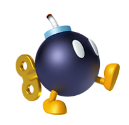À votre tour, placez-la sur une case située à une distance de Manhattan ≤ 2 de l’une de vos pièces.
Explose en 3×3 (case visée + 8 adjacentes) et détruit toutes les pièces dans la zone. Joue un son d’explosion.
Portails Poids: 4
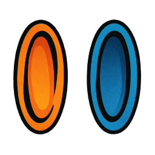Placez d’abord un portail ORANGE sur une case vide, puis un portail BLEU sur une autre case vide.
En entrant par ORANGE, la pièce ressort par BLEU et peut poursuivre son mouvement dans la même direction. Les portails restent en place jusqu’à la nouvelle partie.
Icône d’inventaire: portals.png — Portails posés: portal-orange.png / portal-blue.png
Éclair Poids: 1
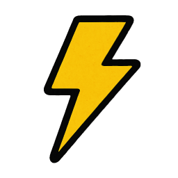Arrive avec 5 charges. À chaque manche complète, le compteur diminue de 1. Utilisable quand il atteint 0.
Effet: flash global, détruit toutes les pièces sur les cases blanches (y compris les vôtres), sauf celles protégées par l’étoile.
Étoile Poids: 2
Active une invincibilité pour un tour complet (jusqu'à ce que chaque joueur ait joué).
Vos pièces ne peuvent pas être capturées et sont immunisées contre l'Éclair pendant la durée. Un fond arc‑en‑ciel apparaît sous vos pièces. Joue un son spécifique.
Tetrimino Poids: 3
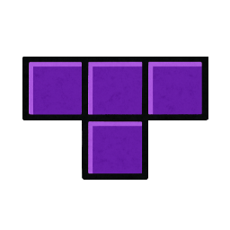Place un mur violet en forme de T inversé (3 cases horizontales + 1 case en dessous du milieu).
Le mur bloque le passage de toutes les pièces sauf les cavaliers qui peuvent sauter par-dessus. Peut être placé n'importe où sur la grille tant qu'il n'écrase pas de pièces.
Tornado Poids: 2
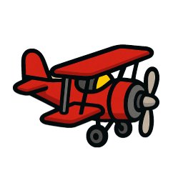Téléporte votre roi sur n'importe quelle case vide de la grille.
L'avion de Tails permet une évasion stratégique ou un repositionnement offensif. Ne peut pas être placé sur des caisses d'objets, des tetriminos ou des cases occupées.
Banane Poids: 5
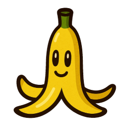Place un piège sur une case vide. Les pièces qui traversent cette case ont 33% de chance de trébucher.
Si une pièce trébuche, elle s'arrête sur la case de la banane et n'effectue pas son action (capture, etc.). La banane disparaît après avoir fait trébucher une pièce.
Queue de Phoenix Poids: 3
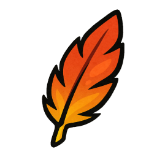Ressuscite la dernière pièce perdue par le joueur et la place près de son roi.
Si aucune pièce n'a été perdue, l'objet n'a aucun effet. La pièce ressuscitée apparaît sur la case libre la plus proche du roi du joueur.
Curseur Sims Poids: 2
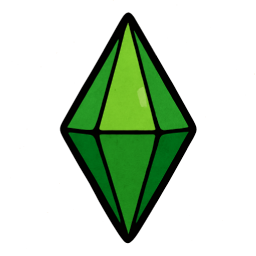Cible une pièce faible ou moyenne d'un adversaire et la déplace près de son roi d'origine.
La pièce visée reste contrôlée par son joueur d'origine mais ne peut plus sortir de sa "maison" (zone de 5x3, 5x4 ou 7x5 selon la taille du plateau). Un curseur apparaît au-dessus d'elle et se déplace avec elle.
Cœur Poids: 2
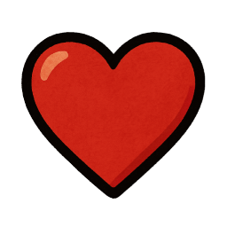Donne une vie supplémentaire à une pièce de votre choix (alliée ou adverse).
Le cœur apparaît en haut à droite de la pièce. Quand la pièce se fait capturer, elle reste en place mais perd son cœur. Le cœur se déplace avec la pièce tant qu'elle n'est pas capturée.
Sablière du Temps Poids: 3
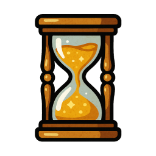Le temps de l'adversaire s'effrite ! Réduit le chrono de tous les adversaires de 1 minute.
Cet objet ne fonctionne que si le timer est activé. Inspiré de Prince of Persia: The Sands of Time, il permet de prendre l'avantage temporel sur ses ennemis.
Masque de Majora
Poids : 4
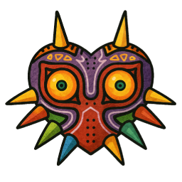
Contrôlez l'esprit de votre adversaire ! Choisissez une pièce adverse que l'adversaire sera obligé de jouer lors de son prochain tour.
Inspiré de The Legend of Zelda: Majora's Mask, ce masque maudit force vos ennemis à agir selon votre volonté. Utilisez-le stratégiquement pour forcer des mouvements défavorables !
Ocarina du Temps
Poids : 5
Appelez Epona avec cette mélodie magique ! Transformez n'importe quelle pièce en cavalier avec les mouvements du cheval d'échecs.
Inspiré de The Legend of Zelda: Ocarina of Time, cet instrument légendaire donne des mouvements équestres permanents. L'effet dure jusqu'à la fin de la partie !